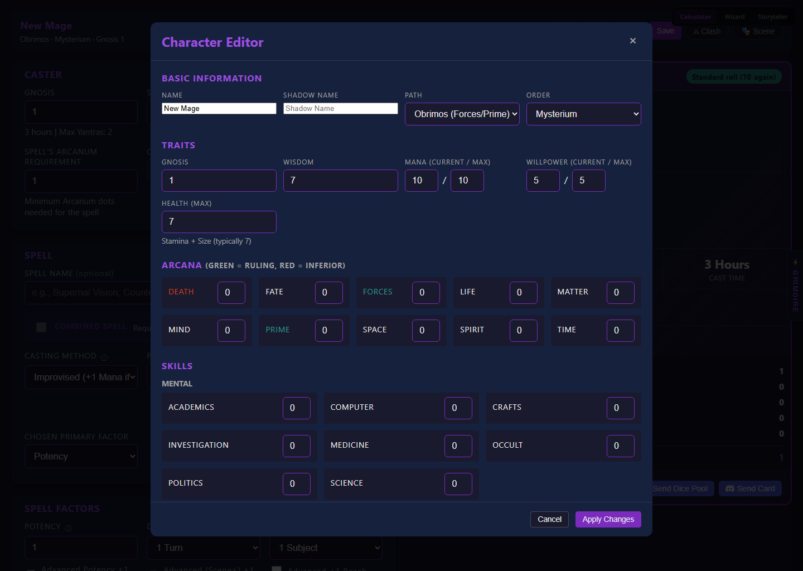
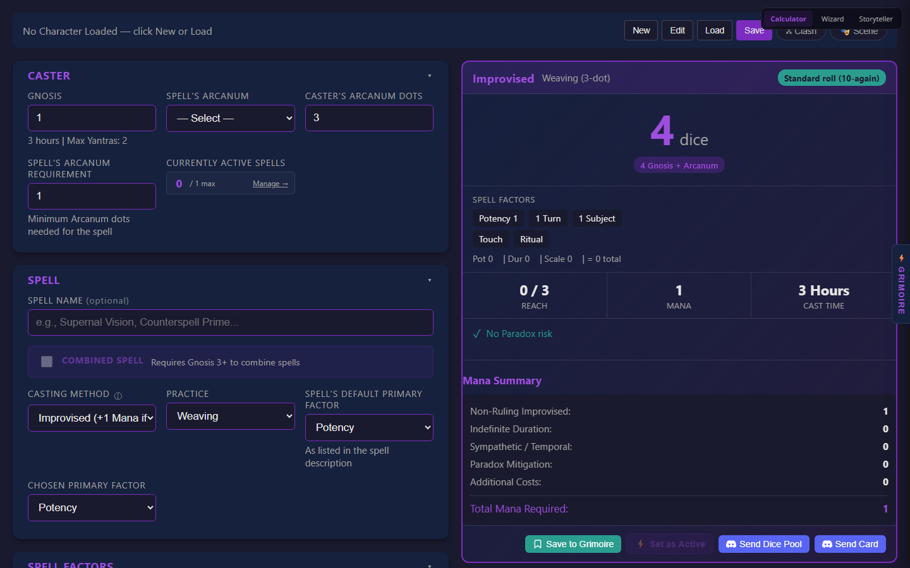
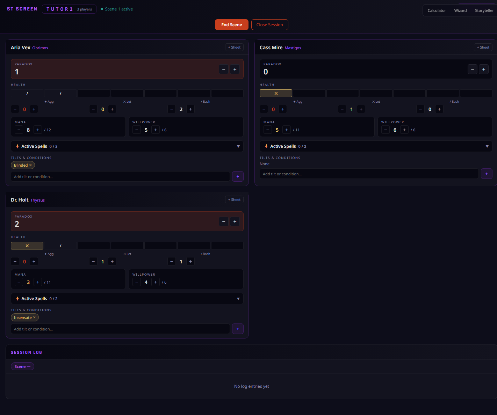

Mage: The Awakening · 2nd Edition
Electronic Grimoire
A Spellcasting Aide — calculator · character tracker · shared compendium · live table
A guided tour · press → or Space · S for notes
Why it exists
Play the mage, not the math
The friction it removes:
- Spell factors — potency, duration, scale, range — are fiddly to total by hand.
- Every point of Reach you can't pay for invites Paradox.
- Mana, Willpower, Health and active spells drift over a long session.
What the app does:
- Computes the dice pool and Reach/Mana/Paradox for you, live.
- Keeps your character sheet and spell library in one place.
- Syncs the table — players and Storyteller see the same state.
One app, three faces
How the pieces fit together
📖
Set up once
Classic
Desktop hub — build & manage your mage, full character editor, spell library, combined casting.
→
⟡
Cast every session
Wizard
Guided mobile flow — load your mage and walk a spell from Arcanum to dice pool.
→
🎲
Run the table
Storyteller
The ST screen — player cards, scene log, Tilts & Conditions, sheet overrides.
Set up once in Classic →
cast every session in Wizard →
the ST runs the table in Storyteller.
Get started in 30 seconds
It's just a web app
- Open the URL — nothing to download.
- Install it (browser “Add to Home Screen / Install”) to get an app icon.
- Works offline after first load — it's a PWA.
- Your character is stored locally, never uploaded.
The live Wizard is running on the right — try it: tap “New Character”
or step through the flow.
⟡
Act 1
First-time setup
Build your mage in Classic — or import a character file.
Then you're ready to cast.
Act 1 · Getting a character
Two ways to begin
📖 Build one in Classic
- Open Classic, hit New Character, fill in the editor.
- Best for your own mage — you set every dot.
📥 Import a .json
- Got a file from a friend or your ST? Just Load it.
- The file is the portable, shareable copy of a mage.
A character holds:
GnosisPathOrder10 ArcanaSkillsWisdomMana · WP · Health
Act 1 · The character editor
Editor I — who your mage is
- Name & Shadow Name — mundane and Awakened identities.
- Path sets your ruling Arcana; Order your faction.
- Gnosis — Supernal attunement; drives dice and your Mana pool.
- Wisdom — your moral standing.
Live Classic is on the right — click New Character to open the full editor.
The editor is desktop-first — open Classic on a larger screen to follow along.
Live · index.html (Classic)

Screenshot · the Classic character editor
Act 1 · The character editor
Editor II — what your mage can do
The 10 Arcana
Dots here are the heart of the dice pool. Each Arcanum keeps its color across the whole app:
Death
Fate
Forces
Life
Matter
Mind
Prime
Space
Spirit
Time
Skills & more
- Skills feed Rote casting pools.
- Mana, Willpower, Health — tracked live as you play.
- Discord webhooks — optional, for sending rolls (Appendix A3).
Act 1 · Portability
Your mage is a file you own
- Save downloads a
.json — your portable backup.
- It round-trips: load the same file into Wizard, or hand it to your ST.
- It's stored locally too, so it's waiting next time you open the app.
⚠ Privacy: if you've set Discord webhooks, they travel inside the file. Classic warns you on save — don't post your character in public channels.
Shared sessions strip webhooks before syncing — they never leave on the wire.
⟡
Act 2
Casting every session
With a mage in hand, the Wizard walks you through a spell — one step at a time.
Act 2 · Wizard
Pick up your mage
- Load the
.json you saved in Classic…
- …or just reopen — Wizard remembers your last character.
- The header shows live Mana / Willpower / Health you nudge as you play.
The live Wizard is on the right — give it a tap.
Act 2 · The cast flow
One step at a time
- Arcanum & Practicewhat you're doing, and how
- Factorspotency · duration · scale · range
- Yantrastools & gestures that add dice
- Castyour pool, Reach, Mana & Paradox
Act 2 · The payoff
Reading your result
- 🎲 Dice pool — Gnosis + Arcanum + every modifier, totalled.
- ↑ Reach — how much you used vs. what's free.
- ⬡ Mana — what the spell costs.
- ⚠ Paradox — flagged when you reach past free.
Act 2 · Send it to the table
Roll straight to Discord
- One tap posts a tidy embed of your spell…
- …then the dice-bot command so the bot rolls it.
- Casting deducts Mana once and bumps the scene's Paradox counter when relevant.
Shown as a mock — real sends post to your configured webhook (Appendix A3).
⟡
Act 3
Spells: create, save & load
Build a spell once, keep it forever. Classic is your spellbook.
Act 3 · Your spellbook
Three kinds of saved spell
Rotes
Practiced, skill-backed
Set spells your mage has mastered — cast with a Skill die bonus.
Praxes
Signature improvisations
Spells you've made your own — improvised, but second nature.
Improvised favorites
Quick recall
Handy one-offs you don't want to rebuild each time.
Classic manages all three — create, edit, delete. Wizard can save into them.
Act 3 · Create & save
Build it once, save it
- Dial in the spellarcanum, practice, factors, yantras
- Save to Librarythe calculator snapshots the whole cast
- Name it & pick a typerote · praxis · favorite
The save captures every factor — next time it loads back exactly as you built it.
Rotes remember their Rote Skill, so the pool is right on reload.
Act 3 · Load & re-cast
Recall a spell in one click
- Load any saved spell back into the calculator.
- Tweak factors for the moment, then cast.
- Save back as "update existing" — or as a new spell.
→
🧮
Calculator
loads its factors
→
Act 3 · Manage
Edit, organize & export
- Edit or delete any spell; move it between types.
- Browse by tab — rotes · praxes · favorites.
- Export the whole spellbook to a PNG (or print).
Tip: the PNG export makes a great handout — a one-page picture of your mage's repertoire.
Act 3 · One library, two doors
Wizard saves into the same book
- From a Wizard cast, Save to Library drops it into the same lists.
- It rides along inside your character file.
But: managing the library — editing, deleting, reorganizing, exporting — is a Classic job.
Same "set up in Classic, use in Wizard" rhythm as characters.
⟡
Act 4
Power user — Classic
Everything on one screen, plus tricks Wizard doesn't carry.
Act 4 · The full desk
Everything, all at once
- The whole calculator on one screen — no stepping.
- Built for a laptop or shared table screen.
- Character, library, combined casting and scene — all here.
Classic is desktop-first — open it on a bigger screen to explore live.
Live · index.html (Classic)

Screenshot · Classic, the full calculator
Act 4 · Classic-only
Combined spell casting
- Cast several spells together in one action.
- The pool uses your lowest Arcanum among them…
- …and applies a combination penalty per extra spell.
- Reach and Mana are totalled across the set.
Why Classic-only? It needs the whole form visible at once — exactly Classic's strength. Wizard's step flow doesn't carry it.
Act 4 · The core rule
The Reach economy
✅ Free Reach
- 1 free for each dot your Arcanum is above the spell's requirement
- Spend it on extra factors at no cost
Stay within free Reach → a clean cast.
⚠ Beyond free Reach
- Each Reach beyond free adds ⌈Gnosis÷2⌉ Paradox dice — and no inherent Mana cost
- Spending Mana is optional: cancel those dice 1-for-1 (and it isn't the only way to reduce Paradox)
The app totals the Paradox dice and flags it automatically.
↑
Add a factor
raises Reach
→
→
→
⬡
Spend Mana?
optional offset
⟡
Act 5
Together at the table
A shared spell library, live stat sync, and the Storyteller's screen.
Act 5 · Community spells
The shared Compendium
- A global, searchable spell library shared by everyone.
- Grouped by Arcanum — with descriptions, Reach effects & page refs.
- Open it from Classic or Wizard; load any entry into your calculator.
Browse by Arcanum:
Death
Fate
Forces
Life
Matter
Mind
Prime
Space
Spirit
Time
Act 5 · Contributing
Anyone can suggest — roles keep it clean
Tier 1
Suggester
Propose new spells & edits
→
Tier 2
Sub-editor
Review & refine suggestions
→
Tier 3
Editor
Approve & publish entries
→
Tier 4
Admin
Grant roles · bulk import
Suggestions carry the submitter's name & note; editors approve them into the live compendium.
Act 5 · Live play
One scene, everyone in sync
🧑🤝🧑
Players
Classic / Wizard
⇅live
⇅live
- Join a scene with a code; your Mana / Health / WP / Paradox push live to the ST.
- The ST can nudge stats and apply Tilts — they flow right back to you.
Act 5 · Behind the screen
The Storyteller's view
- Player cards — Health, Mana, Willpower, Paradox at a glance.
- Scene log and a sheet viewer with ST overrides.
- Apply Tilts & Conditions to players in a click.
The ST screen is desktop-first — open it on a laptop to explore live.

Screenshot · the Storyteller dashboard
Act 5 · Status effects
Tilts & Conditions, explained inline
- A shared catalog of Tilts & Conditions with full descriptions.
- Names show a hover tooltip — no flipping through books.
- The ST applies them; players see them on their own sheet.
ST setup: the catalog starts empty — import the provided CSV once so everyone sees descriptions.
⟡
Act 6
Mastery
The small things that make it smooth.
Act 6 · Built-in help
The rules are in the tooltips
- Glossary tooltips on tricky terms — hover for the rule.
- Inline hints for Roll Quality & n-Again.
- Sensible defaults everywhere — you rarely start from zero.
New to Mage? You can drive the whole app from the tooltips without the rulebook open.
Act 6 · Good to know
Tips & gotchas
- Build in Classic / import — Wizard's "New Character" is just a blank stub.
- Grimoire rotes can't be cast Instant — the form keeps them at ritual.
- Webhook privacy — they live inside your exported file; don't share it publicly.
- Offline — install as a PWA and it keeps working without a connection.
- Live infrastructure — sessions & compendium are real shared services; use throwaway codes to experiment.
⟡
Go cast something
Set up once in Classic · cast in Wizard · run the table in Storyteller.
Questions or ideas? Bring them to the table — or the Compendium.
⟡
Appendix
For the curious
Deeper mechanics & what's under the hood.
Appendix · A1
Anatomy of a cast
🧙
Character
Gnosis + Arcanum dots
→
⚙️
Factors
potency · duration · scale · range
→
→
🎲
Dice pool
+ Reach / Mana / Paradox
→
💬
Discord
embed + bot command
Each stage maps to a section of the form — and to a module in the codebase (spellFactors → dicePool → discord).
Appendix · A2
Clash of Wills
- When two spells collide, each mage rolls an opposed pool.
- The app builds your clash pool from your highest relevant Arcanum.
- Send it to Discord like any other roll — same embed format.
Appendix · A3
Discord, set up properly
- Add a channel webhook URL to your character (per-character).
- Two messages per send: a readable embed, then the bot command.
- Embeds carry the Arcanum's color — instantly readable at the table.
Privacy (§E): webhook URLs stay in your character file so it round-trips — but are stripped from anything pushed to a shared scene.
Set them up once in the Classic character editor.
Appendix · A4
A power-user session
→
📚
Load a rote
from your library
→
➕
Combine spells
Classic-only
→
💬
Send & sync
roll + stats push
Library + combined casting + live session, all on one Classic screen — the full power-user loop.
Appendix · A5
Under the hood
- No build step — three static HTML pages; React & Babel load from CDN.
- Firebase — Realtime DB for live scenes, Firestore for the compendium.
- PWA — network-first for app code, cache-first for CDN; genuinely offline-capable.
A shared rules engine (spellFactors.js + dicePool.js) powers both Classic & Wizard, with a test harness guarding the math.
For maintainers: see docs/ARCHITECTURE.md.